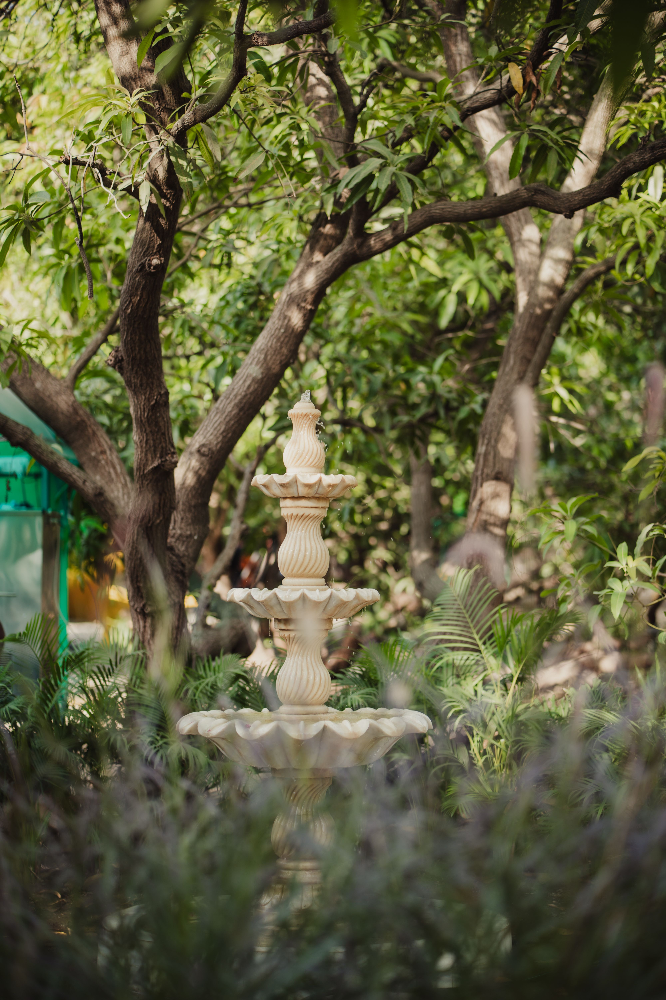

In This Article
- Introduction
- Set Priorities Instead of Cleaning the Entire House
- Prepare the Entrance and Main Guest Areas
- Leave the Guest Bathroom Clean and Complete
- Add Comfort Without Spending Much
- A Practical 60-Minute Preparation Routine
- Review the Home Before Guests Arrive
- Frequently Asked Questions
- Prepare for Different Types of Visits
- Prepare for Different Types of Visits
- Prepare for Different Types of Visits
- Prepare for Different Types of Visits
- Prepare for Different Types of Visits
- Prepare for Different Types of Visits
- Prepare for Different Types of Visits
- Prepare for Different Types of Visits
- Prepare for Different Types of Visits
- Prepare for Different Types of Visits
- Prepare for Different Types of Visits
- Prepare for Different Types of Visits
- Prepare for Different Types of Visits
- Conclusion
Introduction
Preparing your home for visitors does not require turning it into a showroom. The easiest approach is to focus on the spaces guests will actually use: the entrance, living room, dining area, bathroom, and, when necessary, the guest bedroom.
A realistic plan reduces stress and helps you spend time on what actually improves comfort. Order, essential cleaning, ventilation, lighting, and clear seating matter more than perfect drawers or new decoration.
Set Priorities Instead of Cleaning the Entire House
Begin by returning misplaced items to their normal locations. If time is short, use a temporary basket to collect objects that belong in other rooms and distribute them before guests arrive.
Then clean visible areas and frequently touched surfaces. Dusting, vacuuming or sweeping, and cleaning the floors where needed usually create a greater impact than reorganizing a drawer nobody will use.
Check lighting and ventilation. Open windows when conditions allow and confirm that the main lamps work. Fresh air and comfortable light can make the home feel cared for even without special decoration.
Control odors at the source. Empty trash, clean the sink, and deal with damp textiles. Strong air fresheners do not replace cleaning and can be uncomfortable for sensitive guests.
If children or pets live in the home, think about circulation and safety. Move fragile objects away from busy paths, collect loose cables, and plan how pets will be managed if a guest is uncomfortable around them.
Leave the final few minutes for yourself. A realistic preparation should allow you to welcome people calmly rather than exhausted from trying to perfect every corner.
Prepare the Entrance and Main Guest Areas
The entrance creates the first impression and mainly needs a clear path. Remove shoes, bags, packages, or other objects that block movement.
Provide somewhere for coats, umbrellas, handbags, or backpacks when necessary. It does not need to be elaborate; a few hooks or a clear chair can be enough.
In the living room, make sure the seats are actually available. Cushions and throws can add comfort, but they should not occupy every place.
Keep at least one side table or other surface clear for glasses, phones, or small personal items. If every surface is filled with decoration, temporarily remove a few objects.

If food or drinks will be served, check the route between the kitchen and dining area. Move anything that narrows the path and avoid loose cords where people will walk.
Adjust heating, ventilation, or air conditioning ahead of time. Several people together can make a room warmer than usual.
Prepare water, clean glasses, and basic serving items before guests arrive so you do not need to leave the conversation repeatedly.
If children are visiting, move fragile objects, small choking hazards, and toxic plants out of easy reach.
Leave the Guest Bathroom Clean and Complete
The bathroom deserves special attention because guests will use it independently. Clean the sink, toilet, mirror, and floor and remove unnecessary personal items from visible surfaces.
Provide enough toilet paper and leave a spare roll where it can be found easily. Hand soap and a clean, dry towel should also be available.
Empty the trash if needed and make sure there is a suitable liner. Small practical details reduce the need for guests to ask for help.
Check that the door closes correctly and that the light works. If the room has an extractor fan, confirm that it operates normally.
Store medicines, personal hygiene items, and delicate objects in a private and safe place. Cleaning products and medication should remain out of children's reach.

Avoid filling the bathroom with strong fragrances. Good cleaning and ventilation are usually enough.
Before guests arrive, look at the room from their perspective: is there soap, toilet paper, a dry towel, a bin, and enough light? If so, the bathroom is ready.
Add Comfort Without Spending Much
A welcoming home does not depend on buying new decoration. Comfort comes from available seating, a pleasant temperature, sufficient lighting, and the feeling that basic needs have been considered.
If someone will stay overnight, prepare clean bedding, an extra pillow if available, and space for luggage. A clear surface and easy access to an electrical outlet are especially useful.
Tell guests naturally where the bathroom is and where they can leave their belongings. This helps people settle in without having to ask about every detail.
If you plan to serve food, ask ahead about relevant allergies or dietary restrictions. You do not need many options, but you should avoid preventable uncomfortable or unsafe situations.
Keep napkins, coasters, and a simple way to deal with spills nearby. Solving a small accident quickly prevents it from becoming a concern for the rest of the visit.
Music can support the atmosphere, but keep it low enough for easy conversation. Lighting should also remain comfortable without leaving walkways dark.
Once everything is ready, stop reorganizing. Guests will remember attention and conversation far more than a perfectly arranged shelf.
A Practical 60-Minute Preparation Routine
If you have one hour, use the first fifteen minutes to collect misplaced items and clear paths. Work with a basket and do not stop to reorganize drawers.

Use the next fifteen minutes for the bathroom: sink, toilet, mirror, toilet paper, soap, and a clean towel.
Spend another fifteen minutes vacuuming or sweeping common areas and cleaning the table or surface where food and drinks will be served.
During the final fifteen minutes, ventilate, check lighting, prepare water, and clear the seats. Then put cleaning products away and stop working.
If someone will stay overnight, prepare the guest room before this quick routine. Bedding should be clean and completely dry, and the guest should have a reasonable place for luggage.
A reusable checklist on your phone can make the process faster each time. Divide it into bathroom, living room, kitchen, and overnight guest categories.
Over time, simple weekly routines reduce last-minute work even further. A functional home needs less emergency preparation than one organized only when visitors are expected.
Review the Home Before Guests Arrive
Walk through the main areas without cleaning tools in your hands. This second look often reveals blocked paths, visible clutter, or missing practical details.
Check that access remains clear and that cleaning supplies have been put away. Make sure no temporary organization solution has created a new obstacle.
Ask whether the result solves the original goal: are the rooms comfortable, usable, and welcoming? If the answer is yes, further changes are unnecessary.
Do not make extra changes only to make everything look perfectly uniform. A home needs to work naturally during the visit.
Keep a brief note of what was useful and what took too long. The next preparation will be easier because you will already know the most effective priorities.
Frequently Asked Questions
What should I clean first before receiving visitors?
Prioritize the entrance, living or dining area, bathroom, and the surfaces guests will actually use.
How do I prepare the house when I have little time?
Collect misplaced items, clean the bathroom and main surfaces, ventilate, and clear seats and walkways.
What should always be available in the bathroom?
Toilet paper, soap, a clean towel, a bin, and good lighting.
Do I need to buy decoration for guests?
No. Order, essential cleaning, comfortable lighting, and usable seating are more important.
What should I prepare for an overnight guest?
Clean bedding, luggage space, lighting, a free surface, and practical access to an electrical outlet.
Prepare for Different Types of Visits
A short coffee visit needs less preparation than a meal or overnight stay. Match the amount of work to the actual visit rather than following the same checklist every time.
This keeps preparation realistic and prevents spending time on rooms or supplies that guests will not use.
Prepare for Different Types of Visits
A short coffee visit needs less preparation than a meal or overnight stay. Match the amount of work to the actual visit rather than following the same checklist every time.
This keeps preparation realistic and prevents spending time on rooms or supplies that guests will not use.
Prepare for Different Types of Visits
A short coffee visit needs less preparation than a meal or overnight stay. Match the amount of work to the actual visit rather than following the same checklist every time.
This keeps preparation realistic and prevents spending time on rooms or supplies that guests will not use.
Prepare for Different Types of Visits
A short coffee visit needs less preparation than a meal or overnight stay. Match the amount of work to the actual visit rather than following the same checklist every time.
This keeps preparation realistic and prevents spending time on rooms or supplies that guests will not use.
Prepare for Different Types of Visits
A short coffee visit needs less preparation than a meal or overnight stay. Match the amount of work to the actual visit rather than following the same checklist every time.
This keeps preparation realistic and prevents spending time on rooms or supplies that guests will not use.
Prepare for Different Types of Visits
A short coffee visit needs less preparation than a meal or overnight stay. Match the amount of work to the actual visit rather than following the same checklist every time.
This keeps preparation realistic and prevents spending time on rooms or supplies that guests will not use.
Prepare for Different Types of Visits
A short coffee visit needs less preparation than a meal or overnight stay. Match the amount of work to the actual visit rather than following the same checklist every time.
This keeps preparation realistic and prevents spending time on rooms or supplies that guests will not use.
Prepare for Different Types of Visits
A short coffee visit needs less preparation than a meal or overnight stay. Match the amount of work to the actual visit rather than following the same checklist every time.
This keeps preparation realistic and prevents spending time on rooms or supplies that guests will not use.
Prepare for Different Types of Visits
A short coffee visit needs less preparation than a meal or overnight stay. Match the amount of work to the actual visit rather than following the same checklist every time.
This keeps preparation realistic and prevents spending time on rooms or supplies that guests will not use.
Prepare for Different Types of Visits
A short coffee visit needs less preparation than a meal or overnight stay. Match the amount of work to the actual visit rather than following the same checklist every time.
This keeps preparation realistic and prevents spending time on rooms or supplies that guests will not use.
Prepare for Different Types of Visits
A short coffee visit needs less preparation than a meal or overnight stay. Match the amount of work to the actual visit rather than following the same checklist every time.
This keeps preparation realistic and prevents spending time on rooms or supplies that guests will not use.
Prepare for Different Types of Visits
A short coffee visit needs less preparation than a meal or overnight stay. Match the amount of work to the actual visit rather than following the same checklist every time.
This keeps preparation realistic and prevents spending time on rooms or supplies that guests will not use.
Prepare for Different Types of Visits
A short coffee visit needs less preparation than a meal or overnight stay. Match the amount of work to the actual visit rather than following the same checklist every time.
This keeps preparation realistic and prevents spending time on rooms or supplies that guests will not use.
Conclusion
Preparing your home for visitors is much easier when the work is divided into clear priorities. Focus on the spaces guests will use, provide basic comfort, and stop once the home is clean, safe, and functional.
You do not need to complete every possible task in one day. A simple routine and reusable checklist will make future visits easier to prepare for.